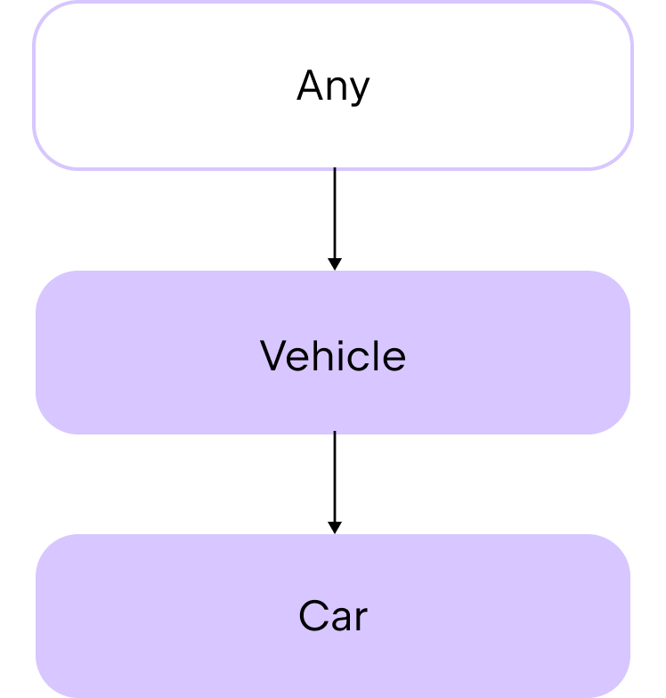

在初学者教程中, 你已经学习了如何使用类和数据类来保存数据, 以及维护一组能够在代码中共用的特性. 最终, 你会想要创建一个层级结构, 在你的项目中高效的共用代码. 本章介绍 Kotlin 为共用代码提供了哪些选择, 以及这些方案如何让你的代码更加安全, 更加易于维护.
类继承
在前一章, 我们介绍了如何使用扩展函数来扩展类, 而不必修改原来的源代码. 但如果你在处理一些复杂的任务, 需要在类 之间 共用代码, 那么应该怎么办? 对于这样的情况, 你可以使用类继承.
Kotlin 中的类默认不能继承. Kotlin 这样设计是为了防止意外的继承, 让你的类更易于维护.
Kotlin 类只支持 单继承, 意思是说 一次只能从一个类 继承. 被继承的这个类称为 父类.
一个类的父类又继承另一个类 (祖类), 构成一个层级结构. Kotlin 的类层级结构的最顶端是共通的父类: Any. 所有的类都最终继承 Any 类:

Any 类自动提供了 toString() 函数, 作为它的成员函数. 因此, 你可以在任何类中使用这个继承得到的函数. 例如:
class Car(val make: String, val model: String, val numberOfDoors: Int)
fun main() {
//sampleStart
val car1 = Car("Toyota", "Corolla", 4)
// 通过字符串模板使用 .toString() 函数, 打印输出类的属性
println("Car1: make=${car1.make}, model=${car1.model}, numberOfDoors=${car1.numberOfDoors}")
// 输出结果为: Car1: make=Toyota, model=Corolla, numberOfDoors=4
//sampleEnd
}如果你想要使用继承在类之间共用某些代码, 首先请考虑使用抽象类.
抽象类
抽象类默认可以继承. 抽象类的目的是提供成员, 供其它类继承或实现. 因此, 它们有构造器, 但不能创建抽象类的实例. 在子类中, 使用 override 关键字来定义父类的属性和函数的行为. 通过这种方式, 可以说子类 "覆盖(override)" 了父类的成员.
抽象类可以包含 带有 实现的函数和属性, 也可以包含 没有 实现的函数和属性, 称为抽象函数和属性.
要创建一个抽象类, 请使用 abstract 关键字:
abstract class Animal要声明一个 没有 实现的函数或属性, 也使用 abstract 关键字:
abstract fun makeSound()
abstract val sound: String例如, 假设你想要创建一个抽象类 Product, 并从它创建子类来定义不同的产品类别:
abstract class Product(val name: String, var price: Double) {
// 抽象属性, 表示产品类别
abstract val category: String
// 一个函数, 可以由所有产品共用
fun productInfo(): String {
return "Product: $name, Category: $category, Price: $price"
}
}在这个抽象类中:
构造器有 2 个参数, 表示产品的
name和price.有一个抽象属性, 包含产品类别, 类型是字符串.
有一个函数, 打印输出关于产品的信息.
我们来为电子产品创建一个子类. 在子类中为 category 属性定义实现之前, 你必须使用 override 关键字:
class Electronic(name: String, price: Double, val warranty: Int) : Product(name, price) {
override val category = "Electronic"
}Electronic 类:
继承
Product抽象类.构造器有一个额外的参数:
warranty, 这是电子产品独有的.覆盖了
category属性, 包含字符串"Electronic".
现在, 你可以这样使用这些类:
abstract class Product(val name: String, var price: Double) {
// 抽象属性, 表示产品类别
abstract val category: String
// 一个函数, 可以由所有产品共用
fun productInfo(): String {
return "Product: $name, Category: $category, Price: $price"
}
}
class Electronic(name: String, price: Double, val warranty: Int) : Product(name, price) {
override val category = "Electronic"
}
//sampleStart
fun main() {
// 创建 Electronic 类的一个实例
val laptop = Electronic(name = "Laptop", price = 1000.0, warranty = 2)
println(laptop.productInfo())
// 输出结果为: Product: Laptop, Category: Electronic, Price: 1000.0
}
//sampleEnd尽管抽象类非常适合以这种方式共用代码, 但它们仍然存在限制, 因为 Kotlin 中的类只支持单继承. 如果你需要从多个来源继承, 请考虑使用接口.
接口
接口与类类似, 但有一些不同:
你不能创建接口的实例. 接口没有构造器或头部.
接口的函数和属性默认隐式的可以继承. 在 Kotlin 中, 我们称之为 "open".
如果你不为接口的函数提供实现, 不需要将函数标记为
abstract.
与抽象类类似, 可以使用接口来定义一组函数和属性, 之后供类继承和实现. 这种方式帮助你专注于由接口描述的抽象功能, 而不是具体的实现细节. 使用接口能够让你的代码:
更加模块化, 因为它隔离了不同的部分, 允许它们独自演化.
更易于理解, 因为它将相关的函数组合到一个内聚的功能集合中.
更易于测试, 因为你可以在测试中快速的使用 mock 替换真实的实现.
要声明一个接口, 请使用 interface 关键字:
interface PaymentMethod接口实现
接口支持多继承, 因此类可以一次实现多个接口. 首先, 我们来看看类实现 单个 接口的场景.
要创建实现单个接口的类, 请在你的类头部之后添加冒号, 之后是想要实现的接口名称. 不要在接口名称之后使用括号 (), 因为接口没有构造器:
class CreditCardPayment : PaymentMethod例如:
interface PaymentMethod {
// 函数默认可以继承
fun initiatePayment(amount: Double): String
}
class CreditCardPayment(val cardNumber: String, val cardHolderName: String, val expiryDate: String) : PaymentMethod {
override fun initiatePayment(amount: Double): String {
// 模拟使用信用卡处理支付
return "Payment of $$amount initiated using Credit Card ending in ${cardNumber.takeLast(4)}."
}
}
fun main() {
val paymentMethod = CreditCardPayment("1234 5678 9012 3456", "John Doe", "12/25")
println(paymentMethod.initiatePayment(100.0))
// 输出结果为: Payment of $100.0 initiated using Credit Card ending in 3456.
}在这个示例中:
PaymentMethod是一个接口, 有一个initiatePayment()函数, 没有实现.CreditCardPayment是一个类, 实现PaymentMethod接口.CreditCardPayment类覆盖继承的initiatePayment()函数.paymentMethod是CreditCardPayment类的一个实例.在
paymentMethod实例上, 调用覆盖的initiatePayment()函数, 使用参数100.0.
要创建一个实现 多个 接口的类, 请在你的类头部之后添加冒号, 之后是想要实现的接口名称, 以逗号分隔:
class CreditCardPayment : PaymentMethod, PaymentType例如:
interface PaymentMethod {
fun initiatePayment(amount: Double): String
}
interface PaymentType {
val paymentType: String
}
class CreditCardPayment(val cardNumber: String, val cardHolderName: String, val expiryDate: String) : PaymentMethod,
PaymentType {
override fun initiatePayment(amount: Double): String {
// 模拟使用信用卡处理支付
return "Payment of $$amount initiated using Credit Card ending in ${cardNumber.takeLast(4)}."
}
override val paymentType: String = "Credit Card"
}
fun main() {
val paymentMethod = CreditCardPayment("1234 5678 9012 3456", "John Doe", "12/25")
println(paymentMethod.initiatePayment(100.0))
// 输出结果为: Payment of $100.0 initiated using Credit Card ending in 3456.
println("Payment is by ${paymentMethod.paymentType}")
// 输出结果为: Payment is by Credit Card
}在这个示例中:
PaymentMethod是一个接口, 有一个initiatePayment()函数, 没有实现.PaymentType是一个接口, 有paymentType属性, 没有初始化.CreditCardPayment是一个类, 实现PaymentMethod和PaymentType接口.CreditCardPayment类覆盖继承的initiatePayment()函数和paymentType属性.paymentMethod是CreditCardPayment类的一个实例.在
paymentMethod实例上, 调用覆盖的initiatePayment()函数, 使用参数100.0.在
paymentMethod实例上, 访问覆盖的paymentType属性.
关于接口和接口继承, 详情请参见 接口.
委托
接口是很有用的, 但如果你的接口包含很多函数, 它的子类可能会出现大量样板代码. 如果你只想覆盖一个类的一小部分行为时, 你就需要大量的重复代码.
例如, 假设你有一个接口 DrawingTool, 包含很多函数和一个属性 color:
interface DrawingTool {
val color: String
fun draw(shape: String)
fun erase(area: String)
fun getToolInfo(): String
}你创建了一个类 PenTool, 实现 DrawingTool 接口, 为它的所有成员提供实现:
class PenTool : DrawingTool {
override val color: String = "black"
override fun draw(shape: String) {
println("Drawing $shape using a pen in $color")
}
override fun erase(area: String) {
println("Erasing $area with pen tool")
}
override fun getToolInfo(): String {
return "PenTool(color=$color)"
}
}你想要创建与 PenTool 类似的类, 保持相同的行为, 只是 color 值不同. 一种方案是创建一个新的类, 接受一个实现了 DrawingTool 接口的对象作为参数, 例如一个 PenTool 类实例. 然后, 在这个类之内, 你可以覆盖 color 属性.
但在这种情况下, 你需要为 DrawingTool 接口的每个成员添加实现:
interface DrawingTool {
val color: String
fun draw(shape: String)
fun erase(area: String)
fun getToolInfo(): String
}
class PenTool : DrawingTool {
override val color: String = "black"
override fun draw(shape: String) {
println("Drawing $shape using a pen in $color")
}
override fun erase(area: String) {
println("Erasing $area with pen tool")
}
override fun getToolInfo(): String {
return "PenTool(color=$color)"
}
}
//sampleStart
class CanvasSession(val tool: DrawingTool) : DrawingTool {
override val color: String = "blue"
override fun draw(shape: String) {
tool.draw(shape)
}
override fun erase(area: String) {
tool.erase(area)
}
override fun getToolInfo(): String {
return tool.getToolInfo()
}
}
//sampleEnd
fun main() {
val pen = PenTool()
val session = CanvasSession(pen)
println("Pen color: ${pen.color}")
// 输出结果为: Pen color: black
println("Session color: ${session.color}")
// 输出结果为: Session color: blue
session.draw("circle")
// 输出结果为: Drawing circle with pen in black
session.erase("top-left corner")
// 输出结果为: Erasing top-left corner with pen tool
println(session.getToolInfo())
// 输出结果为: PenTool(color=black)
}你会看出, 如果在 DrawingTool 接口中有大量的成员函数, CanvasSession 类中的样板代码数量会变得很大. 但是, 还有另一种选择.
在 Kotlin 中, 可以使用 by 关键字, 将接口实现委托给一个类的实例. 例如:
class CanvasSession(val tool: DrawingTool) : DrawingTool by tool其中, tool 是 PenTool 类的实例名称, 成员函数的实现委托给它.
现在你不必为 CanvasSession 类中的成员函数添加实现了. 编译器会自动通过 PenTool 类为你完成这些. 这样可以为你避免编写大量样板代码的麻烦. 你只需要对子类中想要修改的行为添加代码即可.
例如, 如果你想要修改 color 属性的值:
interface DrawingTool {
val color: String
fun draw(shape: String)
fun erase(area: String)
fun getToolInfo(): String
}
class PenTool : DrawingTool {
override val color: String = "black"
override fun draw(shape: String) {
println("Drawing $shape using a pen in $color")
}
override fun erase(area: String) {
println("Erasing $area with pen tool")
}
override fun getToolInfo(): String {
return "PenTool(color=$color)"
}
}
//sampleStart
class CanvasSession(val tool: DrawingTool) : DrawingTool by tool {
// 没有样板代码!
override val color: String = "blue"
}
//sampleEnd
fun main() {
val pen = PenTool()
val session = CanvasSession(pen)
println("Pen color: ${pen.color}")
// 输出结果为: Pen color: black
println("Session color: ${session.color}")
// 输出结果为: Session color: blue
session.draw("circle")
// 输出结果为: Drawing circle with pen in black
session.erase("top-left corner")
// 输出结果为: Erasing top-left corner with pen tool
println(session.getToolInfo())
// 输出结果为: PenTool(color=black)
}如果你想要, 你也可以在 CanvasSession 类中覆盖继承的成员函数的行为, 但现在你不必为每个继承的成员函数添加新代码.
详情请参见 委托.
实际练习
习题 1
想象你正在开发一个智能家居系统. 智能家居通常包含不同类型的设备, 它们都具备一些基本功能, 但也有一些独特的行为. 请在下面的示例代码中, 完成 abstract 类 SmartDevice, 让子类 SmartLight 能够成功编译.
然后, 创建另一个子类 SmartThermostat, 继承 SmartDevice 类, 并实现 turnOn() 和 turnOff() 函数, 这两个函数包含打印语句, 描述哪个加热器正在加热, 或已经关闭. 最后, 添加另一个函数, 名为 adjustTemperature(), 接受一个温度值参数, 并打印输出: $name thermostat set to $temperature°C.
- 提示
在
SmartDevice类中, 添加turnOn()和turnOff()函数, 然后你可以在SmartThermostat类中覆盖这两个函数的行为.
abstract class // 请在这里编写你的代码
class SmartLight(name: String) : SmartDevice(name) {
override fun turnOn() {
println("$name is now ON.")
}
override fun turnOff() {
println("$name is now OFF.")
}
fun adjustBrightness(level: Int) {
println("Adjusting $name brightness to $level%.")
}
}
class SmartThermostat // 请在这里编写你的代码
fun main() {
val livingRoomLight = SmartLight("Living Room Light")
val bedroomThermostat = SmartThermostat("Bedroom Thermostat")
livingRoomLight.turnOn()
// 输出结果为: Living Room Light is now ON.
livingRoomLight.adjustBrightness(10)
// 输出结果为: Adjusting Living Room Light brightness to 10%.
livingRoomLight.turnOff()
// 输出结果为: Living Room Light is now OFF.
bedroomThermostat.turnOn()
// 输出结果为: Bedroom Thermostat thermostat is now heating.
bedroomThermostat.adjustTemperature(5)
// 输出结果为: Bedroom Thermostat thermostat set to 5°C.
bedroomThermostat.turnOff()
// 输出结果为: Bedroom Thermostat thermostat is now off.
}参考答案
abstract class SmartDevice(val name: String) {
abstract fun turnOn()
abstract fun turnOff()
}
class SmartLight(name: String) : SmartDevice(name) {
override fun turnOn() {
println("$name is now ON.")
}
override fun turnOff() {
println("$name is now OFF.")
}
fun adjustBrightness(level: Int) {
println("Adjusting $name brightness to $level%.")
}
}
class SmartThermostat(name: String) : SmartDevice(name) {
override fun turnOn() {
println("$name thermostat is now heating.")
}
override fun turnOff() {
println("$name thermostat is now off.")
}
fun adjustTemperature(temperature: Int) {
println("$name thermostat set to $temperature°C.")
}
}
fun main() {
val livingRoomLight = SmartLight("Living Room Light")
val bedroomThermostat = SmartThermostat("Bedroom Thermostat")
livingRoomLight.turnOn()
// 输出结果为: Living Room Light is now ON.
livingRoomLight.adjustBrightness(10)
// 输出结果为: Adjusting Living Room Light brightness to 10%.
livingRoomLight.turnOff()
// 输出结果为: Living Room Light is now OFF.
bedroomThermostat.turnOn()
// 输出结果为: Bedroom Thermostat thermostat is now heating.
bedroomThermostat.adjustTemperature(5)
// 输出结果为: Bedroom Thermostat thermostat set to 5°C.
bedroomThermostat.turnOff()
// 输出结果为: Bedroom Thermostat thermostat is now off.
}习题 2
创建一个接口 Media, 用来实现特定的媒体类, 例如 Audio, Video, 或 Podcast. 你的接口必须包含:
一个属性
title, 表示媒体的标题.一个函数
play(), 播放媒体.
然后, 创建一个类 Audio, 实现 Media 接口. Audio 类必须在构造器中使用 title 属性, 而且必须有一个额外的属性 composer, 类型 为String. 在这个类中, 实现 play() 函数, 打印输出: "Playing audio: $title, composed by $composer".
- 提示
你可以在类的头部使用
override关键字, 在构造器中实现来自接口的属性.
interface // 请在这里编写你的代码
class // 请在这里编写你的代码
fun main() {
val audio = Audio("Symphony No. 5", "Beethoven")
audio.play()
// 输出结果为: Playing audio: Symphony No. 5, composed by Beethoven
}参考答案
interface Media {
val title: String
fun play()
}
class Audio(override val title: String, val composer: String) : Media {
override fun play() {
println("Playing audio: $title, composed by $composer")
}
}
fun main() {
val audio = Audio("Symphony No. 5", "Beethoven")
audio.play()
// 输出结果为: Playing audio: Symphony No. 5, composed by Beethoven
}习题 3
你正在为一个电子商务应用程序构建支付处理系统. 每一种支付方法需要能够对支付进行授权, 并处理一笔交易. 有些支付还需要能够处理退款.
在
Refundable接口中, 添加一个refund()函数, 处理退款.在
PaymentMethod抽象类中:添加一个
authorize()函数, 接受金额参数, 并打印输出一条包含金额的消息.添加一个
processPayment()抽象函数, 也接受金额参数.
创建一个
CreditCard类, 实现Refundable接口和PaymentMethod抽象类. 在这个类中, 添加refund()和processPayment()函数的实现, 让它们打印以下语句:"Refunding $amount to the credit card.""Processing credit card payment of $amount."
interface Refundable {
// 请在这里编写你的代码
}
abstract class PaymentMethod(val name: String) {
// 请在这里编写你的代码
}
class CreditCard // 请在这里编写你的代码
fun main() {
val visa = CreditCard("Visa")
visa.authorize(100.0)
// 输出结果为: Authorizing payment of $100.0.
visa.processPayment(100.0)
// 输出结果为: Processing credit card payment of $100.0.
visa.refund(50.0)
// 输出结果为: Refunding $50.0 to the credit card.
}参考答案
interface Refundable {
fun refund(amount: Double)
}
abstract class PaymentMethod(val name: String) {
fun authorize(amount: Double) {
println("Authorizing payment of $$amount.")
}
abstract fun processPayment(amount: Double)
}
class CreditCard(name: String) : PaymentMethod(name), Refundable {
override fun processPayment(amount: Double) {
println("Processing credit card payment of $$amount.")
}
override fun refund(amount: Double) {
println("Refunding $$amount to the credit card.")
}
}
fun main() {
val visa = CreditCard("Visa")
visa.authorize(100.0)
// 输出结果为: Authorizing payment of $100.0.
visa.processPayment(100.0)
// 输出结果为: Processing credit card payment of $100.0.
visa.refund(50.0)
// 输出结果为: Refunding $50.0 to the credit card.
}习题 4
你有一个简单的消息应用程序, 包含一些基本功能, 但你想要添加一些功能来处理 智能 消息, 但不想大量重复代码.
在下面的代码中, 定义一个 SmartMessenger 类, 继承 Messenger 接口, 但将实现委托给一个 BasicMessenger 类的实例.
在 SmartMessenger 类中, 覆盖 sendMessage() 函数, 发送智能消息. 这个函数必须接受一个 message 参数, 并包含一个打印输出语句: "Sending a smart message: $message". 此外还要调用来自 BasicMessenger 类的 sendMessage() 函数, 并给消息加上 [smart] 前缀.
interface Messenger {
fun sendMessage(message: String)
fun receiveMessage(): String
}
class BasicMessenger : Messenger {
override fun sendMessage(message: String) {
println("Sending message: $message")
}
override fun receiveMessage(): String {
return "You've got a new message!"
}
}
class SmartMessenger // 请在这里编写你的代码
fun main() {
val basicMessenger = BasicMessenger()
val smartMessenger = SmartMessenger(basicMessenger)
basicMessenger.sendMessage("Hello!")
// 输出结果为: Sending message: Hello!
println(smartMessenger.receiveMessage())
// 输出结果为: You've got a new message!
smartMessenger.sendMessage("Hello from SmartMessenger!")
// 输出结果为: Sending a smart message: Hello from SmartMessenger!
// 输出结果为: Sending message: [smart] Hello from SmartMessenger!
}参考答案
interface Messenger {
fun sendMessage(message: String)
fun receiveMessage(): String
}
class BasicMessenger : Messenger {
override fun sendMessage(message: String) {
println("Sending message: $message")
}
override fun receiveMessage(): String {
return "You've got a new message!"
}
}
class SmartMessenger(val basicMessenger: BasicMessenger) : Messenger by basicMessenger {
override fun sendMessage(message: String) {
println("Sending a smart message: $message")
basicMessenger.sendMessage("[smart] $message")
}
}
fun main() {
val basicMessenger = BasicMessenger()
val smartMessenger = SmartMessenger(basicMessenger)
basicMessenger.sendMessage("Hello!")
// 输出结果为: Sending message: Hello!
println(smartMessenger.receiveMessage())
// 输出结果为: You've got a new message!
smartMessenger.sendMessage("Hello from SmartMessenger!")
// 输出结果为: Sending a smart message: Hello from SmartMessenger!
// 输出结果为: Sending message: [smart] Hello from SmartMessenger!
}